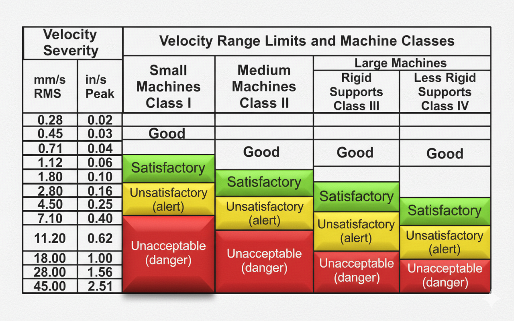
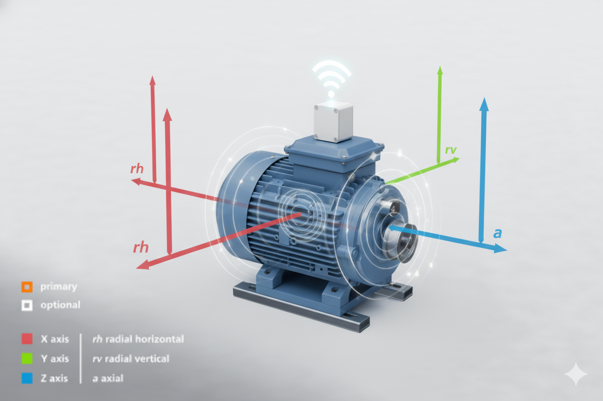
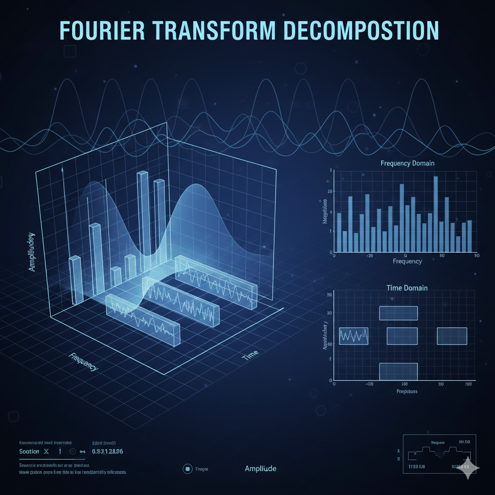
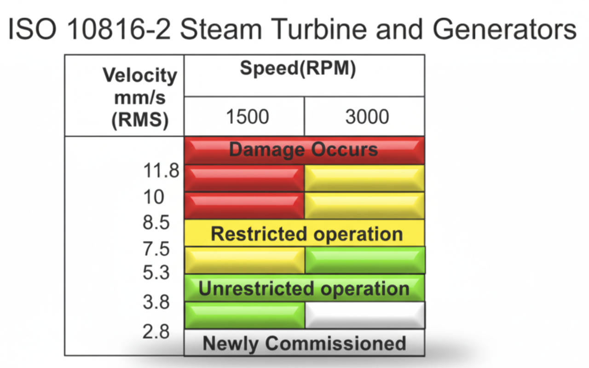
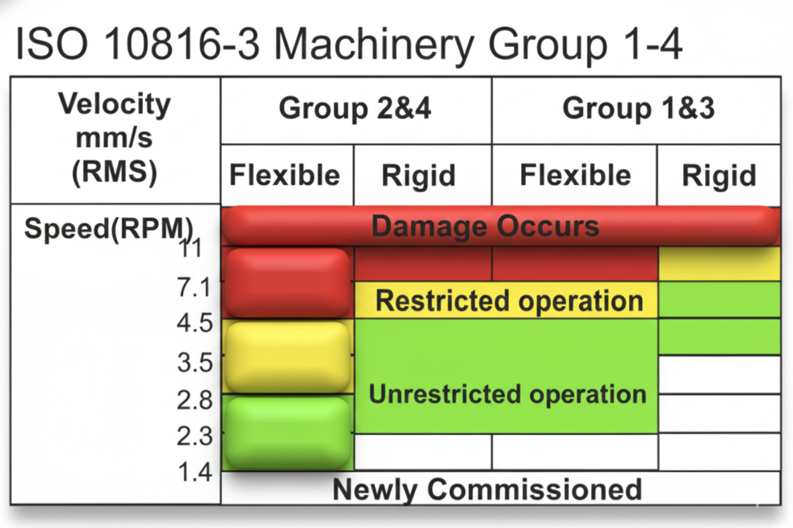
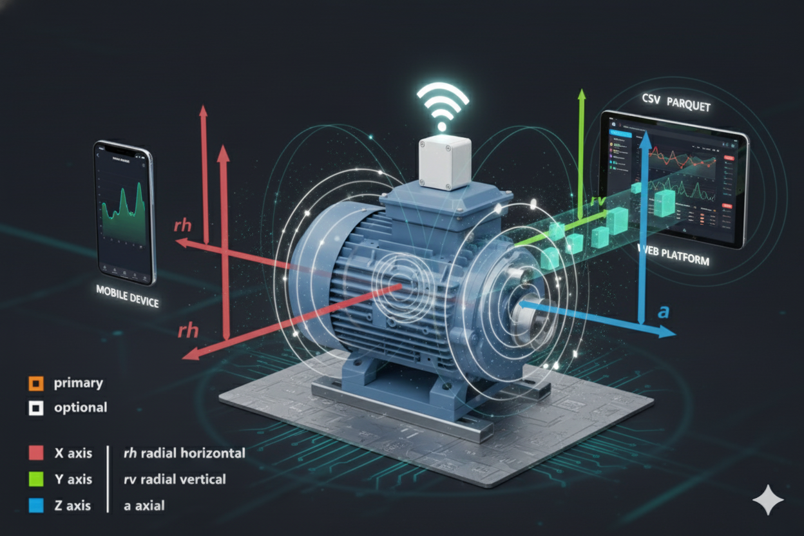
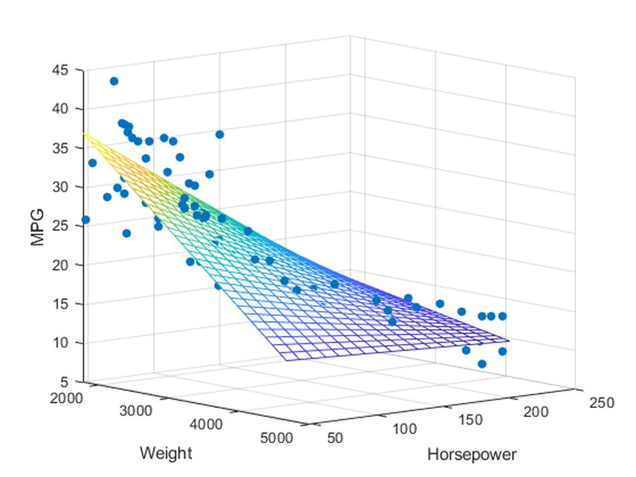
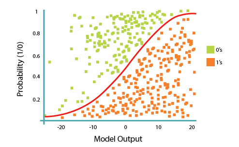
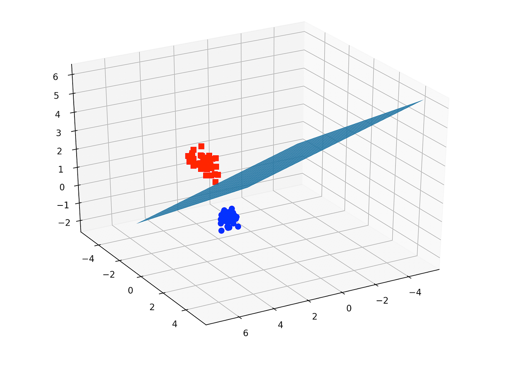
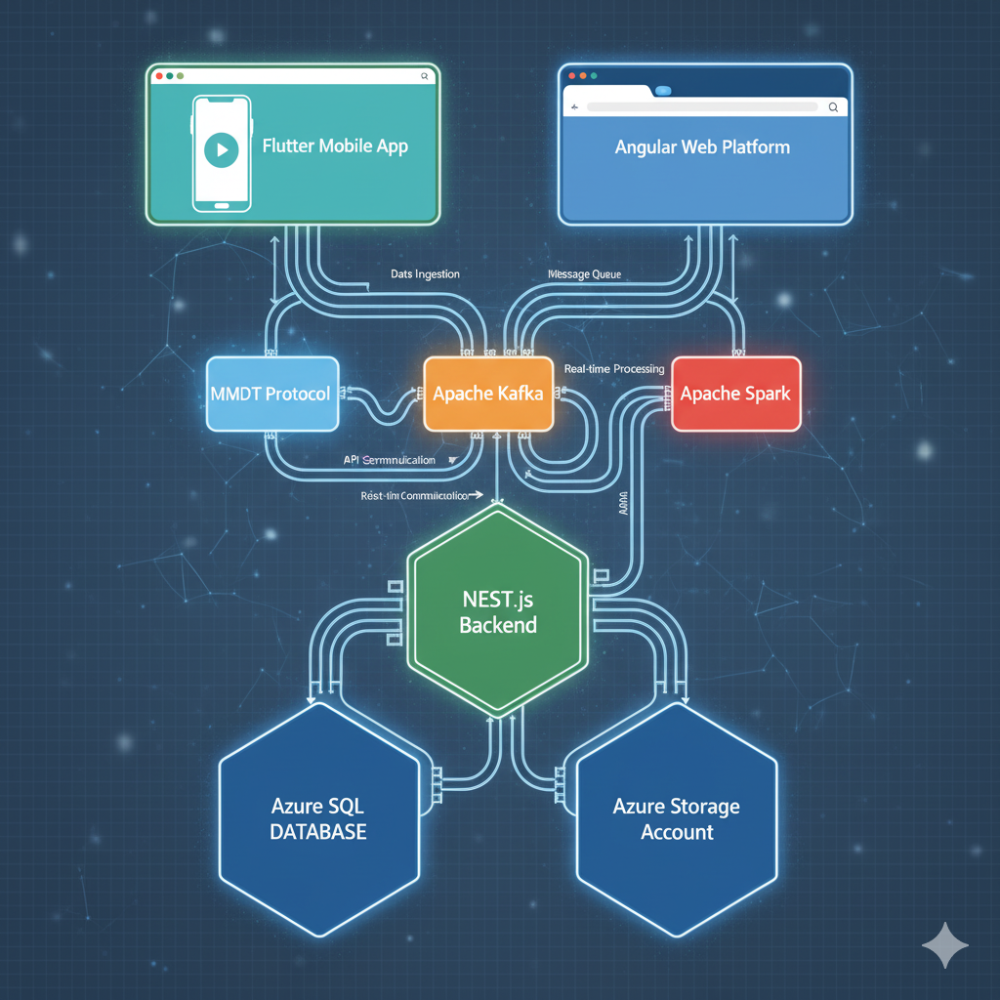

De Datos a Decisiones Inteligentes
Análisis de Vibraciones con IA para Mantenimiento Predictivo 4.0
Hoja de Ruta del Taller
Bloque 1: Data, un Camino a las Decisiones Estratégicas
En el mundo industrial moderno, cada máquina genera miles de puntos de datos por segundo. Pero ¿cómo transformamos esta avalancha de números en decisiones que realmente importen?
¿Data e información son lo mismo?
Piénsalo por un momento...
La Respuesta: No, definitivamente no son lo mismo
 DATA
DATA
Definición: Hechos crudos, números sin contexto
"5.2 mm/s"
Características:
- Sin procesar
- Sin significado por sí solo
- Fácil de generar
- Difícil de interpretar
 INFORMACIÓN
INFORMACIÓN
Definición: Datos procesados con contexto y significado
"La vibración de la bomba está 30% por encima del nivel normal"
Características:
- Procesada y organizada
- Con contexto relevante
- Fácil de entender
- Útil para análisis
 DECISIÓN
DECISIÓN
Definición: Acción basada en información procesada
"Programar mantenimiento preventivo para la próxima semana"
Características:
- Accionable
- Estratégica
- Genera valor
- Impacta resultados
¿Por qué esto importa en el mantenimiento industrial?
💡 El Problema Real
En una planta industrial típica, los sensores pueden generar más de 1 millón de puntos de datos por día. Sin un proceso sistemático para convertir estos datos en decisiones, es como tener una biblioteca gigante sin catálogo: toda la información está ahí, pero es imposible de usar efectivamente.
Casos de Éxito Reales
🏭 Refinería Petrolera
Dato: 2,847 mediciones de vibración/día
Información: Patrón de degradación en bomba crítica
Decisión: Mantenimiento programado vs. falla catastrófica
Resultado: $2.3M ahorrados en 6 meses
⚡ Planta de Energía
Dato: Temperatura promedio: 85°C
Información: Tendencia creciente + 15°C en 2 semanas
Decisión: Inspección inmediata del sistema de enfriamiento
Resultado: Evitó parada no programada de 48h
🏗️ Fábrica Automotriz
Dato: 156,000 mediciones de calidad/hora
Información: Desviación en tolerancias de piezas
Decisión: Ajuste de parámetros de máquina
Resultado: 99.7% de calidad vs. 98.1% anterior
El Camino que Seguiremos
En este curso, aprenderemos a construir un "puente inteligente" que convierte automáticamente los datos crudos de vibración en decisiones de mantenimiento. No solo entenderemos la teoría, sino que construiremos un sistema real:
🎯 Nuestro Objetivo Final
Datos de vibración en tiempo real
Con algoritmos de IA
Acciones de mantenimiento
Costos y disponibilidad
Bloque 2: El Lenguaje Oculto de las Vibraciones
Toda máquina en operación "habla" a través de las vibraciones. Nuestra misión es traducir ese lenguaje para anticiparnos a las fallas.

El Primer Paso: Escuchar con el Sensor
Usamos sensores triaxiales como nuestros "oídos". Pero la señal que capturan es una mezcla de sonidos. Necesitamos una forma de separar las "notas" individuales para encontrar la que está desafinada. A esto le llamamos la Transformada de Fourier (FFT).

¿Por qué es importante escuchar en los 3 ejes (X, Y, Z)?
Imaginen que una llanta de auto está desbalanceada. ¿Dónde sienten más la vibración? ¡En el volante, de lado a lado! Pero si un motor está desalineado con una bomba, la vibración puede ser más fuerte hacia adelante y atrás. Escuchar en un solo eje es como mirar una escultura desde un único ángulo: te pierdes la historia completa. Los 3 ejes nos dan una visión 3D de cómo se está moviendo la máquina, permitiéndonos diagnosticar fallas que son invisibles en una sola dirección.
El Segundo Paso: Extrayendo Inteligencia (KPIs)
1. Valor Pico
Es el punto más alto de la vibración. Sensible a impactos o "golpes" repentinos, típico de fallas en rodamientos.
Unidad: Aceleración (g) o Velocidad (mm/s).
2. RMS (Valor Eficaz)
La "energía" o "potencia destructiva" de la vibración. Mide la salud general y a largo plazo de la máquina.
Unidad: Velocidad (mm/s) es la más común para la norma ISO.
3. Factor de Cresta
La relación Pico / RMS. Un valor alto (>6) es un excelente indicador temprano de fallas de rodamientos.
Unidad: Adimensional (es un ratio).
Bloque 3: ¿Vibración Normal o Peligrosa? La Norma ISO 10816
Ok, tenemos un RMS de 5.2 mm/s. ¿Es bueno o malo? Depende de la máquina. La norma ISO 10816 nos da un "semáforo" de referencia, pero este cambia según el tipo y tamaño del equipo.
Grupo 1: ISO 10816-1 Severidad de vibración en maquinas rotativas
Grupo 2: ISO 10816-2 Severidad de vibración en turbinas y generadores
 15kW)" loading="lazy">
Grupo 3: ISO 10816-3 Severidad de vibración en máquinas criticas

💡 Nota
Con respecto a las clases se debe entender que se agrupan teniendo como criterio la base en la cual se encuentran instaladas de esta forma ,los grupos 1 y 3 son para maquinas más pequeñas mientras que los grupos 2 y 4 son para maqunas más grandes.El analisis de la severidad es realizado por ingenieros de mantenimiento de diferentes categorias.
Bloque 4: Creando un Supervisor Inteligente con IA
La norma ISO es genial, pero solo ve una parte de la foto (el RMS). Un analista experto conectaría el RMS, el Factor de Cresta y la Temperatura para dar un diagnóstico más preciso. ¡Eso es exactamente lo que hará nuestro "supervisor" de IA!
¿Qué problema resuelve nuestro supervisor?
Flujo Total del Proyecto

¿Por qué Regresión Logística y no otros modelos?
Existen muchos modelos de "regresión", pero no todos sirven para lo mismo. La regresión lineal, por ejemplo, intenta predecir un número continuo (como el precio de una casa). La Regresión Logística es especialista en problemas de clasificación binaria como el nuestro, calculando la probabilidad de que una máquina pertenezca a una clase de algun tipo.
Regresión Lineal

Uso: Predicción de valores continuos
Regresión Logística

Uso: Clasificación binaria
SVM

Uso: Clasificación compleja
Nuestras Herramientas (Tecnologías)
- Lenguaje: Python. El estándar de facto en ciencia de datos por su simplicidad y sus potentes librerías (Pandas, Scikit-learn).
- Entorno: Google Colab. Un cuaderno interactivo en la nube que nos da acceso gratuito a GPUs y nos permite colaborar fácilmente.
- Datos: Archivos CSV. Datos reales de vibración y temperatura tomados en campo por un sensor, nuestra materia prima.


Bloque 5: Poniendo a Prueba Nuestro Modelo
¿Qué lograremos al final de la práctica?
Construiremos un sistema funcional que toma datos crudos del sensor y, automáticamente, genera un diagnóstico claro y accionable.
Preparación del Entorno
Para la parte práctica, solo necesitarán dos cosas:
- Una cuenta de Google (Gmail) para poder acceder a Google Colab.
- ¡Ganas de aprender y experimentar!
Visión a Futuro: De Colab a una App Real
Lo que aprenderemos en Colab es la "inteligencia" de un sistema real. El siguiente paso sería llevar esa inteligencia a una aplicación robusta que el personal de mantenimiento pueda usar en su día a día.
